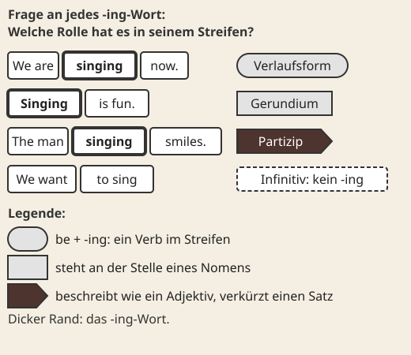

Welche Rolle spielt das -ing-Wort?
Mit einem KI-Tutor lernen
Ein KI-Tutor erklärt dir diese Seite und hilft dir bei den Aufgaben. Wähl deinen Assistenten:
Mit Claude öffnen Mit ChatGPT öffnen Mit Mistral Vibe öffnen
Du nutzt dein eigenes Konto beim Anbieter. Der Assistent ist kein Angebot von lernapps.net: lernapps liefert nur Inhalte und Aufgaben. Die Wahl gilt für alle Seiten, nur auf diesem Gerät.
Was bedeutet stop?
Sophie gründet einen Tennisclub an der Schule und braucht eine Entscheidung. Du liest ihren Blogbeitrag und hilfst dabei. Ein Streifen ist ein Satz oder Satzteil wie auf der Satzstreifen-Wand der früheren Kapitel. Davor eine Frage aus der Wiederholung.
Aufgabe
Lösung
He stopped talking to Sophie
Das heißt, er hörte auf zu reden.
He stopped to talk to Sophie richtige Antwort
Mit to bleibt er stehen, um zu reden.
He stopped to talking to Sophie
Nach to steht das Verb ohne -ing.
Stop to talk heißt stehen bleiben, um zu reden.
Das kannst du danach: Du erkennst, ob ein -ing-Wort Verlaufsform (be plus -ing, zum Beispiel is walking), Gerundium oder Partizip ist, und grenzt es vom Infinitiv mit to ab.
Blogbeitrag über den Tennisclub
Jede Zeile hat eine Nummer. Beim Lesen: Achte auf die Wörter auf -ing und auf die Zahlen, mit denen Sophie die Entscheidung vorbereitet.
| Nr | Text |
|---|---|
| 1 | Playing tennis is great fun, so I decided to start a tennis club at our school. |
| 2 | I asked 40 pupils if they would come. 24 said yes. Of the other 16, nine were afraid of playing badly, and seven prefer other sports. |
| 3 | Mr Hill liked my plan. Looking at the sports list, he told me that the park has two courts and that one court costs £5 an hour. |
| 4 | We need both courts for one hour every Friday for ten weeks. Hiring them is £100 for the term, and the school fund can give £400 to our club. |
| Englisch | Deutsch |
|---|---|
| afraid of | Angst vor |
| court | Tennisplatz |
| hire | mieten |
| fund | Geldtopf, Fonds |
| term | Schulabschnitt |
| Nr | Text |
|---|---|
| 5 | We started on the first Friday of term. Eighteen pupils came, and they were all smiling when the first ball flew across the court. |
| 6 | Mr Hill stood at the side, watching us play. He said that we were good at running, but not at hitting the ball. |
| 7 | The sports cupboard has only eight old rackets, so ten of us were sharing. The pupils waiting for a racket sat on the bench and watched. |
| 8 | Sharing is fun for one lesson, but nobody can learn by waiting. |
| Englisch | Deutsch |
|---|---|
| racket | Schläger |
| cupboard | Schrank |
| share | teilen |
| bench | Bank |
| hit | schlagen, treffen |
| Nr | Text |
|---|---|
| 9 | After the courts, £300 of the fund is left. Mr Hill found two ways to spend it. |
| 10 | A coach would teach us for ten lessons and cost £18 a lesson, which is £180. Teaching two groups of nine, she can show everybody how to hit the ball. |
| 11 | The other choice is buying ten new rackets for £12 each, which is £120, and six tubes of balls for £4 each, which is £24. Together that is £144. |
| 12 | Doing both is impossible: £180 plus £144 is £324, and only £300 is left. |
| 13 | With a coach we are learning the right way to play, but we would still share. With new rackets everybody is playing from the first minute, but nobody is teaching us. |
| 14 | I am writing this post to ask what you think. Mr Hill needs to know our choice by Friday: coach or new rackets and balls? |
| Englisch | Deutsch |
|---|---|
| coach | Trainerin, Trainer |
| lesson | Stunde, Unterrichtsstunde |
| tube | Dose |
| spend | ausgeben |
| impossible | unmöglich |
Welche Rolle hat das -ing-Wort?
Im Blogbeitrag stehen viele Wörter auf -ing, aber sie spielen verschiedene Rollen. Frage bei jedem: Welche Rolle hat es in seinem Streifen? Ein Modalverb ist ein Hilfsverb wie can oder must; danach steht der Infinitiv ohne to.

© CC-BY-4.0Das Wort singing hat in drei Streifen drei Rollen. Der Infinitiv to sing ist keine -ing-Form.
| Rolle | Woran du sie erkennst | Beispiel |
|---|---|---|
| Verlaufsform | be plus -ing, das -ing-Wort ist das Verb | The train is leaving. |
| Gerundium | steht an der Stelle eines Nomens | Dancing makes me happy. I like dancing. |
| Gerundium nach Präposition | immer -ing, nie to plus Verb | He is afraid of falling. |
| Partizip | beschreibt ein Nomen oder verkürzt einen Satz | The cat sitting on the wall is grey. Opening the door, she smiled. |
| Infinitiv | to plus Verb (nach Modalverb ohne to), keine -ing-Form | I like to dance. She can dance. |
Merke
Jedes -ing-Wort hat im Streifen eine Rolle: Verb mit be, Platz eines Nomens (Gerundium) oder Platz eines Adjektivs oder Nebensatzes (Partizip). Nach einer Präposition steht -ing, nie to plus Verb. Nach einem Modalverb steht der Infinitiv ohne to. Bei stop ändert sich die Bedeutung: stop doing hört auf, stop to do bleibt stehen, um etwas zu tun.
| Englisch | Deutsch |
|---|---|
| interested | interessiert |
| climb | klettern |
| test | Test, Klassenarbeit |
| helmet | Helm |
| tired from | müde von |
| tired of | etwas satt haben |
| gate | Tor |
Übung
Aufgabe
Lösung
Es gibt nur acht alte Schläger
Stimmt, aber kein Geldgrund.
Beides zusammen kostet £324, es bleiben nur £300 richtige Antwort
Zeile 12 rechnet es vor.
Der Trainer kostet mehr als das restliche Geld
£180 sind weniger als £300.
Beides kostet zu viel.
Aufgabe
Lösung
Richtige Antwort: 7
In Zeile 7 steht „only eight old rackets“.
Aufgabe
Lösung
Richtige Antwort: The wind is getting stronger. – Verlaufsform; I enjoy running in the rain. – Gerundium; The bus coming round the corner is late. – Partizip; I want to run in the rain. – Infinitiv
Frage nach der Rolle, nicht nach der Endung.
Aufgabe
Welche Form passt? Lies zuerst den deutschen Satz.
- Sie interessiert sich fürs Klettern. → She is interested in ….
- Sie lernt gerade für den Test. → She … for the test.
- Er kann gut schwimmen. → He can … well.
- Der Mann, der dort wartet, ist Mr Hill. → The man … there is Mr Hill.
Lösung
- She is interested in climbing.
- She is studying for the test.
- He can swim well.
- The man waiting there is Mr Hill.
Aufgabe
Lösung
Richtige Antwort: 1. Sophie, 2. is, 3. thinking, 4. about, 5. buying, 6. a, 7. helmet
Nach about steht buying, das Gerundium.
Aufgabe
Schreibe aus den Stichwörtern einen ganzen Satz. Im dritten brauchst du ein Partizip (ohne who).
- She · read a book · now
- He is good at · draw pictures
- The woman · sit next to Mr Hill · is a doctor
Lösung
- Now she is reading a book now. (auch richtig: Now she is reading a book right now.; Now she is reading a book at the moment.; Now she is reading a book .; Now she's reading a book now.; Now she's reading a book right now.; Now she's reading a book at the moment.; Now she's reading a book .; Right now she is reading a book now.; Right now she is reading a book right now.; Right now she is reading a book at the moment.; Right now she is reading a book .; Right now she's reading a book now.; Right now she's reading a book right now.; Right now she's reading a book at the moment.; Right now she's reading a book .; She is reading a book now.; She is reading a book right now.; She is reading a book at the moment.; She is reading a book .; She's reading a book now.; She's reading a book right now.; She's reading a book at the moment.; She's reading a book .)
- He is good at drawing pictures. (auch richtig: He's good at drawing pictures.)
- The woman sitting next to Mr Hill is a doctor.
Aufgabe
Übersetze den Satz.
Tipp
Frage zuerst, welche Rolle das -ing-Wort im englischen Satz hat.
- Lesen ist mein Hobby.
- Sie ist müde vom Warten.
- Mr Hill steht gerade am Tor.
Lösung
- Reading is my hobby. (auch richtig: Reading's my hobby.; My hobby is reading.)
- She is tired from waiting. (auch richtig: She's tired from waiting.)
- Mr Hill is standing at the gate now. (auch richtig: Mr Hill is standing at the gate right now.; Mr Hill is standing at the gate at the moment.; Mr Hill is standing at the gate .; Mr Hill is standing by the gate now.; Mr Hill is standing by the gate right now.; Mr Hill is standing by the gate at the moment.; Mr Hill is standing by the gate .; Mr Hill's standing at the gate now.; Mr Hill's standing at the gate right now.; Mr Hill's standing at the gate at the moment.; Mr Hill's standing at the gate .; Mr Hill's standing by the gate now.; Mr Hill's standing by the gate right now.; Mr Hill's standing by the gate at the moment.; Mr Hill's standing by the gate .)
Aufgabe
Hör zu und schreibe, was du hörst.
- KI
- KI
- KI
Lösung
- Learning a new language takes a lot of time.
- We are meeting outside the library after school.
- Carrying two heavy bags, the old man crossed the road.
Selbst sagen und entscheiden
Aufgabe
Hör zu, sprich nach und nimm dich auf. Vergleiche dann mit dem Original.
Tipp
Hör den Satz zuerst. Sprich dann langsam nach.
- Are you interested in joining the tennis club?KI
- The boy riding a red bike is my cousin.KI
- My brother is learning to play the guitar.KI
Zum Aufnehmen braucht diese Aufgabe JavaScript. Die Beispiele kannst du auch ohne anhören.
Lösung
- Are you interested in joining the tennis club?
- The boy riding a red bike is my cousin.
- My brother is learning to play the guitar.
Offene Aufgabe
Sophie fragt in Zeile 14 ihre Leser, Mr Hill will die Antwort. Schreibe drei englische Sätze: Trainer oder neue Schläger und Bälle? Nenne einen Grund aus Zeile 9 bis 13 und benutze ein Gerundium und ein Partizip.
Eine gute Antwort enthält:
Lösung
I think we should buy the new rackets and balls, because ten of us are sharing eight old rackets. Pupils waiting for a racket cannot learn anything. Buying them costs only £144, so we can still pay for the courts.
Das war das Kapitel
Du hast im Kapitel fünf Satzbausteine kennengelernt: die indirekte Frage (Subjekt vor dem Verb, kein do), which nach einem Komma (greift den ganzen Satz davor auf), It is … that (hebt einen Teil des Satzes hervor), das Partizip statt Relativsatz (the man waiting there) und den Partizipialsatz (Walking home, I met Tom.). Zum Schluss hast du geklärt, welche Rolle ein -ing-Wort spielt: Verlaufsform, Gerundium oder Partizip.
Danach kommt nichts mehr: Das war die letzte Seite. Du kannst jetzt die Selbsteinschätzung öffnen und prüfen, was du schon kannst.
Fehler gefunden oder eine Idee für diese App?